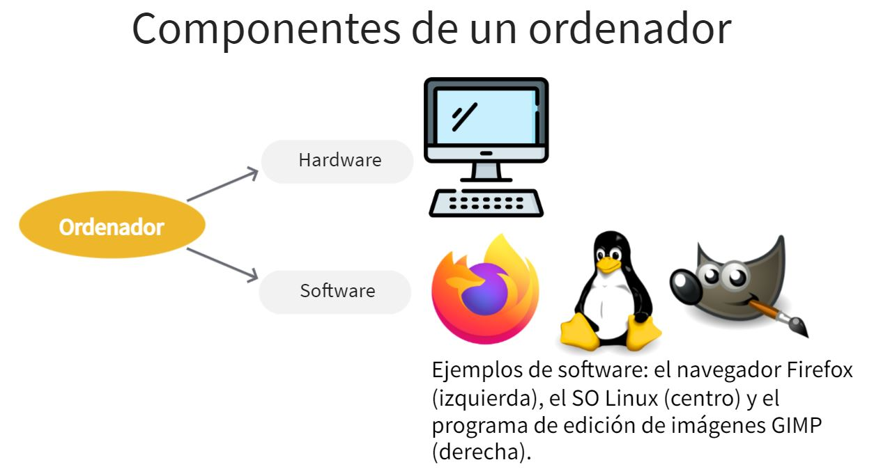

Según la RAE, un ordenador se define como una "máquina electrónica capaz de almacenar información y tratarla automáticamente mediante operaciones matemáticas y lógicas controladas por programas informáticos". Sus componentes básicos son el hardware y el software.
El hardware es el conjunto de componentes físicos que integran el ordenador, todos aquellos que se pueden ver y tocar, ya sean eléctricos, mecánicos o electrónicos.
El software es el conjunto de componentes lógicos que hacen posible al ordenador realizar sus tareas. Son, básicamente, los programas (incluido el más importante de todos, el sistema operativo) y los datos.
Si comparáramos un ordenador con un libro, el material del que estén hechas las portadas y las páginas (cartón y papel, por ejemplo), sería su "hardware". Por otra parte, las ideas contempladas en el libro y a las que accedemos al leerlo, serían su "software".

La arquitectura de un ordenador hace referencia a cómo están organizados los elementos del hardware.
En esta unidad vamos a hablar, sobre todo, de un tipo de ordenadores, los de sobremesa o de escritorio, pero existen muchos otros tipos de ordenadores que comparten una arquitectura similar. Así, los ordenadores podrían clasificarse en:
- De propósito general. De diversos tamaños, utilidad y movilidad, son los mencionados ordenadores de escritorio o sobremesa, portátiles, tabletas y teléfonos inteligentes o smartphones.
- Con fines específicos, como los superordenadores y los sistemas empotrados.
Además, existe una amplia gama de equipos con arquitectura de ordenador, que pueden incluir elementos similares, como microprocesador, memoria, puertos, conectividad inalámbrica, etc. y que presentan algunas prestaciones similares, como la visualización en pantalla o la conexión a Internet.